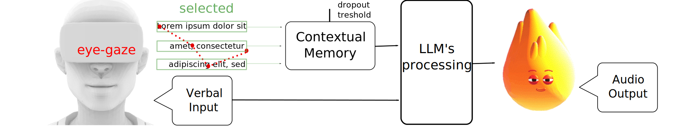

XR devices running chatbots powered by Large Language Models (LLMs) have the potential to become always-on agents that significantly enhance productivity scenarios. Current screen-based chatbots fail to fully utilize the comprehensive suite of natural inputs available in XR, including inward-facing sensor data. Instead, they over-rely on explicit voice or text prompts, sometimes paired with multi-modal data included in the query. We propose a solution that leverages an attention framework to implicitly derive context from user actions, eye gaze, and contextual memory within the XR environment. Our approach minimizes the need for explicitly engineered prompts, fostering intuitive and grounded interactions that provide deeper user insights for the chatbot.
EmBARDiment: A practical XR application that integrates speech-to-text, text-to-speech, gaze-driven saliency, and LLMs for enabling a voice-interactive AI agent within a multi-window XR environment. Developed in Unity and deployed on the Oculus Quest Pro, EmBARDiment incorporates an embodied AI agent to enhance user interaction through verbal and non-verbal cues, utilizing APIs like ChatGPT-4 and Google Cloud Text-to-Speech for immersive experiences.
Multimodal Interaction: The system supports seamless user interaction by leveraging multiple input and output modalities. Verbal requests are transcribed using Google Speech-to-Text API and processed by LLM APIs for context-aware responses. These are converted into speech and synchronized with the AI agent’s facial animations for an engaging experience. Visual feedback is displayed on UI panels for clarity.
Gaze-Driven Contextual Memory: EmBARDiment extends WindowMirror, capturing and processing window content with the Google Vision API. By correlating text with the user’s eye-tracking data, the system determines focus and maintains a saliency buffer for coherent responses. This dynamic contextual memory, cleared after each user request, enables personalized and relevant interactions grounded in real-time attention.
@inproceedings{bovo2025embardiment,
title={Embardiment: an embodied ai agent for productivity in xr},
author={Bovo, Riccardo and Abreu, Steven and Ahuja, Karan and Gonzalez, Eric J
and Cheng, Li-Te and Gonzalez-Franco, Mar},
booktitle={2025 IEEE Conference Virtual Reality and 3D User Interfaces (VR)},
pages={708--717},
year={2025},
organization={IEEE}
}